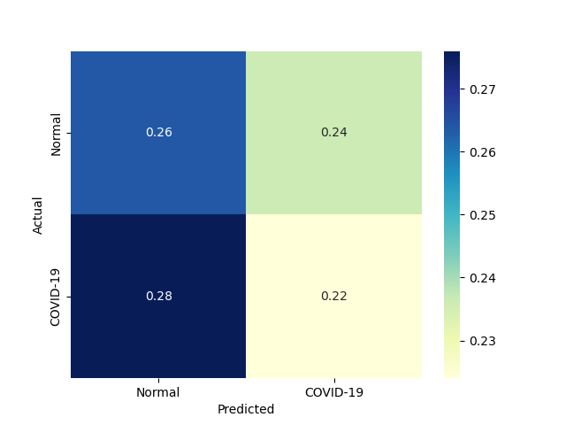

| 6 |
NonLinearSVM |
Non Linear Support Vector Classification |
0.031250 |
0.000000 |
118 |
66 |
59 |
7 |
0.944 |
0.528 |
0.666667 |
0.736 |
0.264 |
0.781457 |
1.056983 |
25.006623 |
inf |
 |
 |
 |
| 5 |
LinearSVM |
Linear Support Vector Classification |
0.078119 |
0.000000 |
101 |
82 |
43 |
24 |
0.808 |
0.656 |
0.701389 |
0.732 |
0.268 |
0.750929 |
1.038338 |
9.612629 |
inf |
|
|
 |
| 4 |
KNeighborsClassifier |
Classifier implementing the k-nearest neighbors vote |
0.000000 |
0.015629 |
116 |
57 |
68 |
9 |
0.928 |
0.456 |
0.630435 |
0.692 |
0.308 |
0.750809 |
0.970723 |
inf |
48.040051 |
|
|
|
| 2 |
BernoulliNBC |
Naive Bayes classifier for multivariate Bernoulli models |
0.000000 |
0.000000 |
108 |
60 |
65 |
17 |
0.864 |
0.480 |
0.624277 |
0.672 |
0.328 |
0.724832 |
0.931322 |
inf |
inf |
 |
 |
 |
| 1 |
RealBoost |
An RealBoost classifier |
2.140608 |
0.000000 |
102 |
61 |
64 |
23 |
0.816 |
0.488 |
0.614458 |
0.652 |
0.348 |
0.701031 |
0.894918 |
0.327491 |
inf |
 |
 |
|
| 3 |
GaussianNBC |
Gaussian Naive Bayes (GaussianNB) |
0.015659 |
0.000000 |
122 |
36 |
89 |
3 |
0.976 |
0.288 |
0.578199 |
0.632 |
0.368 |
0.726190 |
0.882254 |
46.376412 |
inf |
 |
|
 |
| 0 |
DiscreteNBC |
DiscreteNBC |
0.171865 |
0.078482 |
56 |
66 |
59 |
69 |
0.448 |
0.528 |
0.486957 |
0.488 |
0.512 |
0.466667 |
0.623741 |
2.715302 |
5.946186 |
 |
 |
 |
{kind=link}
{kind=link}
{kind=link}
{kind=link}
{kind=link}
{kind=link}
{kind=link}
{kind=link}